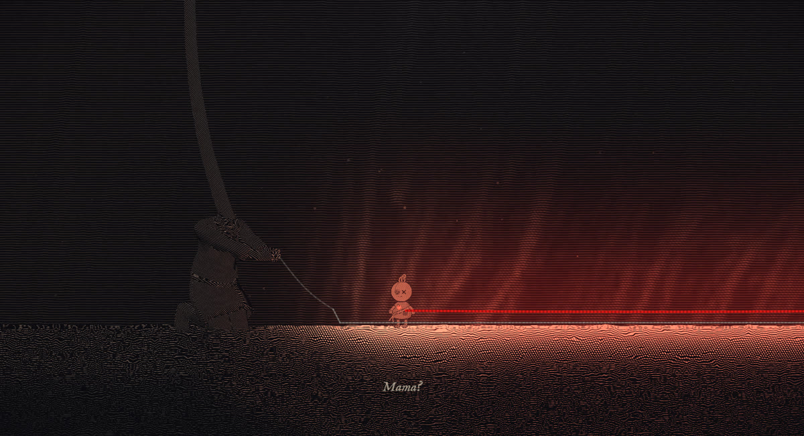
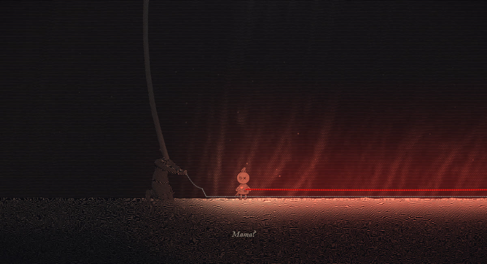
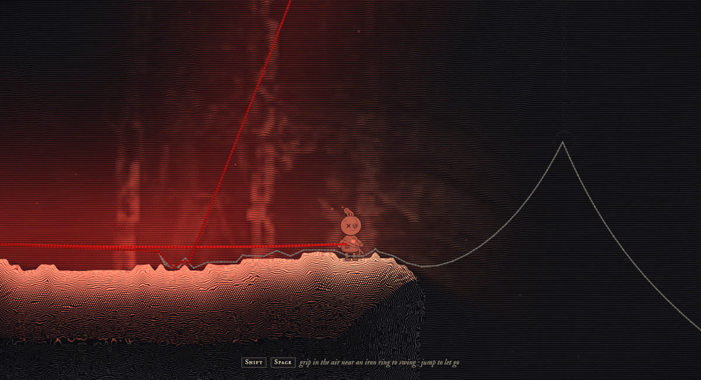
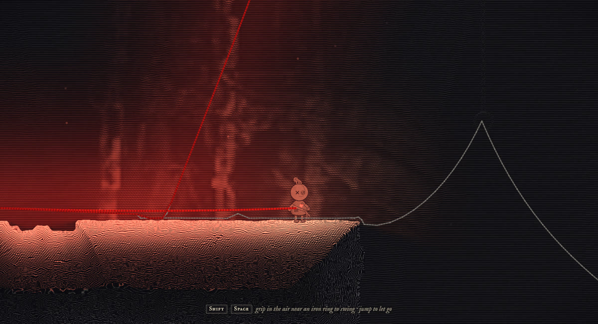
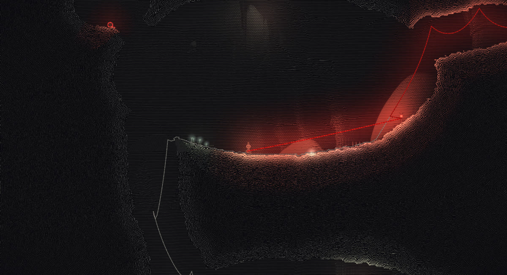
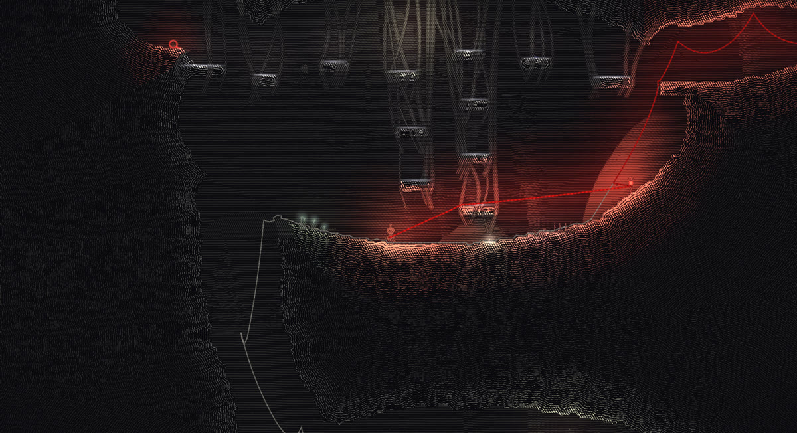
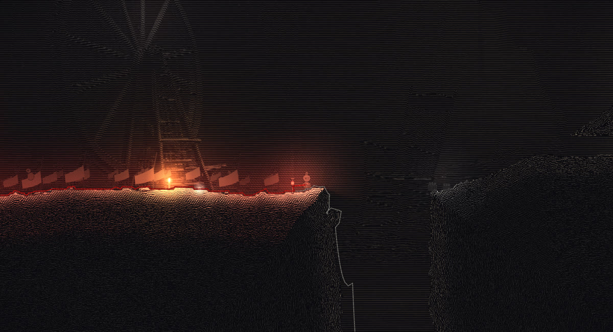
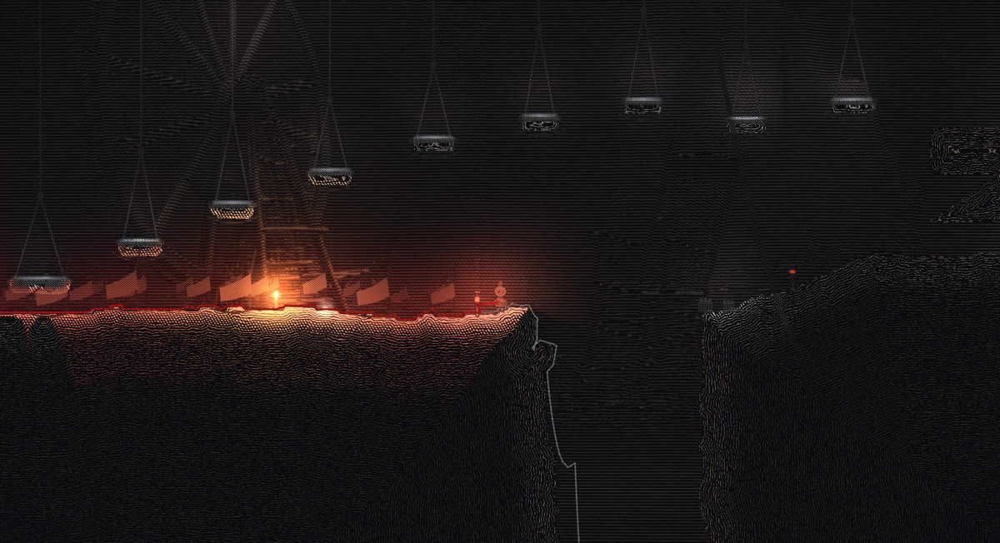

She bites the thread in twoand then it goes looking
I don't like the way the game ends when I bite the thread, it's basically just this thing saying "What have you done?" and then black screen, that is disappointing. Add some cinematic for it as well please
The bitten ending is now about a minute and a half of scenes: one minute played by the game, then a rendered film of 37 seconds, then the same cards as before. The clips have the game’s sound; the subtitles are not in the recordings.
Rendered like the prologue, from the same places, so it reads as that night undone. The storm ends and the snow melts off the Brink. Her window is empty, with the spinning wheel still in it and sweet peas coming up past the sill. Her grey thread lies through the grass to the pit; the camera goes over the edge and down the well. At the bottom, what is in her chair has the doll in its lap and whispers names in its ear, until it notices you.
When I am tying a thread to it, I can see it scale up in the dark, it should either happen slower and smoother so that it is less noticable, or just not at all
Not at all. She used to grow from 1.65 to 2.70 times life size in 3.3 seconds, hidden only by the dark, so on a bright screen it showed. Her body now keeps one size through the whole scene. Her head also used to jump up out of the picture in a single frame; it now rises over 4.4 seconds. I checked the frames with the brightness pushed up: nothing pops.


BeforeAfterDrag the thread to compare
the jump with the first ring in the map has a small bump right before it in the exact place i am trying to jump, and apparently because of this bump I am falling for a split second and cannot jump
You were right. The bump threw her off the ground, and by the time she landed past it the jump was already lost, half a metre before the edge.
| Running off the edge at | Last moment a jump worked, before | Now |
|---|---|---|
| The first ring (Bell Gallery) | 0.6 m before the edge | 0.8 m past it |
| The spare ring in the Throat | 0.2 m before the edge | 0.5 m past it |
| The other eleven rings | 0.6 to 0.8 m past it | 0.7 to 1.1 m past it |


BeforeAfterDrag the thread to compare
there are also 2 hidden rooms which I see but cannot reach, they are behind a hole which is larger than my jump [...] could you please add an alternative separate path to this room on top (parkour over platforms) which leads me just to this room?
Your play logs showed which two: the Last Basket, past the hole in the Hall of Chairs, was the only room you never opened, and the alcove with a skein in the Root Gardens, past the drop, was the only skein you never took. A search through every run and jump the doll can make confirmed that neither could be reached on foot. The holes are as wide as they were.


BeforeAfterDrag the thread to compare


BeforeAfterDrag the thread to compare
app/src/ending.jsThe bitten ending, part by part; the tied one at a constant size.scripts/cine/shots_cut.pyThe five shots of the film; render_cut.sh renders them, edit.py cut cuts it.app/src/level.jsSHELVES, LEVEL (planed ledges), the chute, pole 30.app/src/drawshelf.jsWhat the shelves hang by.app/src/player.jsKeeping to the ground over bumps.